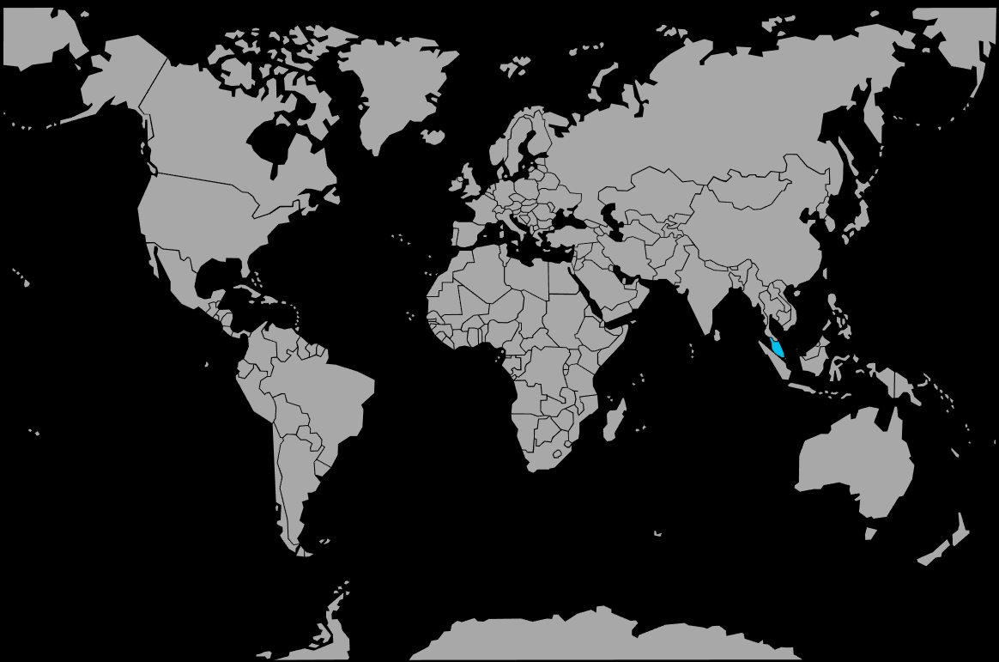

Systématique
- Ordre : Anabantiformes
- Famille : Osphronemidae
- Genre : Betta
- Espèce : Betta persephone

Betta persephone est un betta nain des eaux noires, à la robe très sombre soulignée de reflets bleus, endémique de quelques forêts marécageuses de Johor en Malaisie péninsulaire.
Les adultes atteignent environ 3–4 cm; le dimorphisme est modéré, avec des mâles montrant des couleurs plus intenses et des nageoires légèrement plus développées que celles des femelles.
Espèce réputée délicate, elle supporte mal les variations rapides de paramètres et nécessite une acclimatation douce dans une eau très douce, acide et peu minéralisée.
Betta persephone est discret et timide; il passe une grande partie du temps sous le couvert des plantes, des racines et de la litière de feuilles, loin des lumières fortes et des courants importants.
En aquarium, il doit être maintenu en bac spécifique ou avec des espèces extrêmement calmes, car il cède facilement la place à des poissons plus vifs et peut souffrir de la concurrence alimentaire.
Mode : constructeur de nid de bulles; le mâle édifie un nid assez discret parmi les feuilles de surface ou sous un abri, puis recueille les œufs après l’accolade.
Les œufs et larves sont gardés par le mâle jusqu’à la nage libre; un niveau d’eau bas, une surface très calme et un air humide au‑dessus du bac favorisent la réussite du développement des alevins.
Dimorphisme sexuel : les mâles montrent des reflets bleus plus marqués sur le corps et les nageoires, avec des rayures et une bordure plus nette sur les nageoires; les femelles sont plus ternes, au ventre plus rebondi en période de reproduction.
Espérance de vie : en captivité, la durée de vie observée se situe généralement entre 2 et 3 ans pour cette espèce exigeante.
L’espèce occupe des ruisseaux forestiers, fossés et mares d’eau noire de forêts de tourbières, où la canopée dense limite fortement la lumière; le substrat est tapissé de feuilles, de branches et de racines, et l’eau est extrêmement douce, acide et chargée en tanins.
Répartition
Origine naturelle :
- Sud‑ouest de l’État de Johor, en Malaisie péninsulaire, autour des localités d’Ayer Hitam, Muar et Kluang.
- Ruisseaux et mares de tourbières, fossés forestiers et petites zones inondées à eau noire, sous une forte couverture végétale.
Ces habitats sont très localisés et fortement menacés par la conversion en plantations, ce qui rend l’espèce vulnérable et explique sa rareté.
Paramètres de maintenance
Température : 22 à 26 °C, souvent maintenu autour de 24–25 °C.
pH : 4,0 à 6,0, avec une préférence marquée pour une eau nettement acide.
GH : 0 à 3 °dGH, eau très douce, à base d’eau osmosée légèrement reminéralisée au besoin.
Courant : très faible; filtration douce (exhausteur, filtre à débit réduit) pour ne pas stresser les poissons ni détruire les nids.
Volume conseillé : à partir de 20–30 L pour un couple, plus pour un petit groupe en bac spécifique très planté et sombre.
Régime alimentaire
Régime : carnivore à tendance insectivore; dans son milieu, il consomme de petites proies aquatiques et des insectes tombant à la surface.
En aquarium, il apprécie en priorité les proies vivantes et congelées de petite taille (infusoires, microvers, daphnies, artémias, larves de moustiques); les aliments secs ne sont acceptés qu’avec le temps et doivent rester complémentaires.
Une alimentation variée, distribuée en petites quantités, associée à une excellente qualité d’eau, est fondamentale pour maintenir cette espèce sensible en bonne santé et espérer la reproduction.